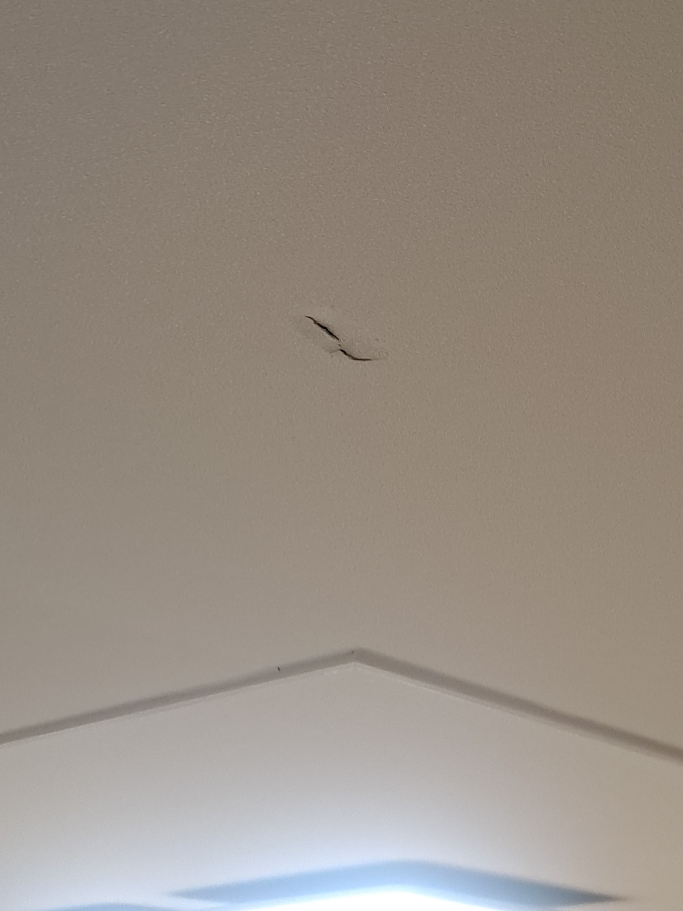
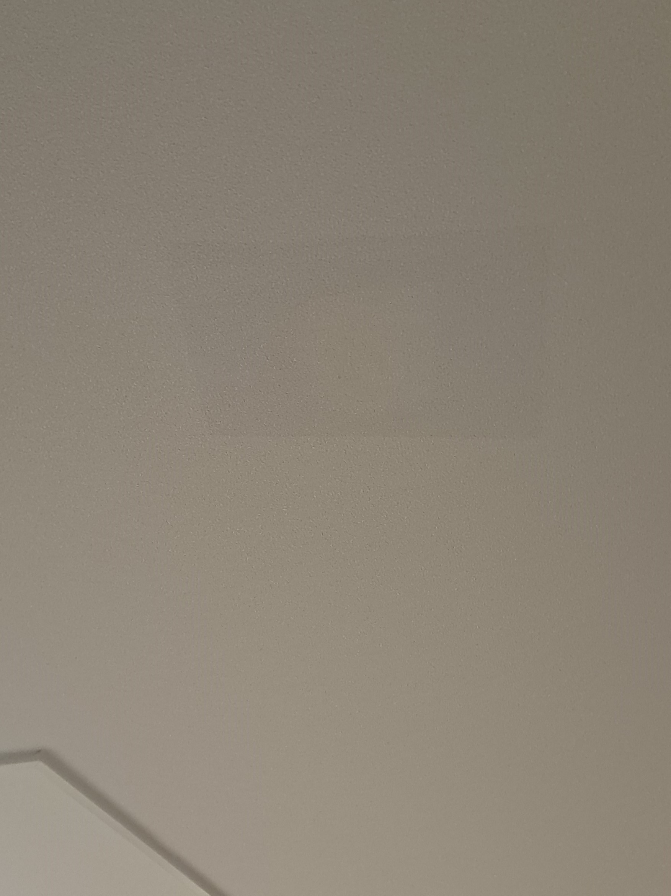

내부 공간 확인
천장 안쪽의 빈 공간과 배선 가능성을 고려해 안전하게 작업 범위를 정합니다.
밤에 이어지는 층간소음으로 천장을 고무망치로 두드리던 중 충격을 받은 석고보드가 깨지고 표면의 벽지까지 찢어진 현장입니다. 천장 전체를 다시 도배하지 않고 파손된 석고와 기존 벽지를 함께 살리는 부분복원으로 진행했습니다.

천장 내부에는 전기 배선이나 설비가 지나갈 수 있고, 아래 방향으로 마감재가 붙어 있어 벽체 수리와 조건이 다릅니다. 손상 부위를 무리하게 누르거나 잘못 절개하면 주변 벽지가 들뜨고 벌어질 수 있으므로 내부 상태를 확인한 뒤 석고와 벽지를 순서대로 복원해야 합니다.
보이는 찢어짐만 붙이면 내부 석고의 강도가 회복되지 않고 주변 벽지가 다시 벌어질 수 있습니다. 천장 구조와 마감 상태를 함께 살펴야 합니다.
천장 안쪽의 빈 공간과 배선 가능성을 고려해 안전하게 작업 범위를 정합니다.
깨진 표면만 가리지 않고 약해진 내부를 안정적으로 보강합니다.
주변 벽지가 들뜨거나 벌어지지 않도록 필요한 범위만 세심하게 다룹니다.
복원 가능한 손상이라면 천장 한 면 전체 도배 없이 부분수리를 검토할 수 있습니다.
천장과 주변을 보호한 뒤 파손 범위와 내부 상태를 확인하고, 석고의 강도와 표면 높이를 회복한 다음 기존 벽지를 정리합니다.
바닥과 주변을 보호하고 파손 크기, 깊이와 벽지 상태를 확인합니다.
부서지고 약해진 석고를 정리하되 기존 벽지는 최대한 보존합니다.
천장 안쪽 상태를 고려해 파손 부위가 다시 흔들리지 않도록 보강합니다.
주변 천장과 높이가 이어지도록 형태를 잡고 표면 단차를 정리합니다.
찢어진 기존 벽지를 섬세하게 연결하고 주변 질감과 방향을 맞춥니다.
깨진 천장 석고를 내부부터 보강하고 찢어진 벽지를 기존 천장 질감과 자연스럽게 이어지도록 마무리했습니다.

“새 벽지가 없어도 이렇게 깔끔하게 되네요~ 너무 감사합니다!”
| 비교 항목 | 부분복원 | 천장 전체 도배 |
|---|---|---|
| 비용 | 손상 부위 중심으로 비교적 부담이 적음 | 철거·바탕 작업과 전체 자재 비용이 발생 |
| 작업시간 | 현장 상태에 따라 비교적 짧음 | 공사 범위에 따라 일정이 길어질 수 있음 |
| 생활 불편 | 작업 범위가 작아 불편을 줄일 수 있음 | 보양과 가구 이동 등 준비 범위가 넓음 |
| 완성도 | 기존 벽지의 색과 질감에 맞춰 연결 | 천장 한 면을 새 벽지로 통일 |
| 효과 | 국소 파손을 보강하고 기존 마감을 유지 | 손상·오염이 넓은 천장을 전체 정리 |
천장 전체와 파손 부위를 함께 보내주시면 석고와 벽지 상태를 확인해 상담합니다.